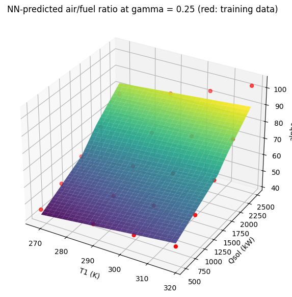

Machine Learning for Energy

Context
In energy research, data usually comes from experiments, hence there is rarely much of it, and a model that fits it closely can still be wrong in ways that matter. ME 249, Machine Learning Tools for Modeling Energy Transport and Conversion Processes, is a graduate course at Berkeley built around that problem: rather than treating machine learning as a black box, it builds the tools up from their foundations, shapes the data with physical insight before fitting it, and judges every result against the uncertainty of the data itself.
I took it in Fall 2026, and this page covers its first two projects: the first on neural networks, which I did on my own, and the second on genetic algorithms, done in a team of three.
Part 1: Neural Networks
The first project started from the inside of a neural network. A three-neuron network learned the outlet temperature of a spray-cooling test rig from eight data points, and I trained it twice, once with backpropagation equations I completed by hand and once with Keras. Both fit the data closely, yet they ended with different weights and almost the same predictions, and the reason was worth finding: every neuron had settled in the linear range of its activation function, so the trained network was effectively a linear function, and eight data points could only pin down four combinations of its eight parameters.
The second half scaled up to a deep network in Keras that predicts two outputs of a hybrid solar and gas turbine power system from three inputs: the air to fuel ratio that holds the turbine inlet at 1473 K, and the efficiency. I trained a network with hidden layers of 4, 8, and 4 ReLU neurons on 60 data points, holding out 20 for testing, and stepped the learning rate down from 0.001 to 0.0001 over 3,600 epochs until the loss reached 0.0372 against a 0.04 target.
The test errors stayed close to the training errors, an RMS error of 4.95 against 4.03 for the air to fuel ratio and 0.0188 against 0.0184 for the efficiency, which suggests the network was not overfitting, although the worst single test point was still off by 14%. As a variation, I swapped the ReLU activations for ELU, which cut the efficiency error by more than a factor of four but made the air to fuel ratio worse, a trade-off rather than a clear improvement.
Part 2: Genetic Algorithms
The second project fit physical models with genetic algorithms. My teammates fit a power-law model of nucleate boiling in a water and 2-propanol mixture, using data from NASA parabolic flights at different gravity levels, and a model of a heat pipe exchanger cooling an electronics cabinet. My part was the two extended tasks built on the boiling model.
The first was a sensitivity study of the predicted heat flux, which at normal gravity is 109.1 W/cm². The sensitivity ratio for wall superheat came out at 2.91, about ten times that of the mixture's composition, 0.283, or the pressure, 0.217, hence keeping the prediction within 15% means knowing the superheat to within about 5%, while composition and pressure can be off by roughly 53% and 69%. At a hundredth of normal gravity, the influence of gravity itself nearly disappeared, its ratio falling from 0.133 to 0.0020, while composition mattered more, at 0.412.
The second turned the model around. I used a genetic algorithm to fit the inverse relation, predicting the wall superheat instead of the heat flux, and over six runs the best reached an error of 0.00893, with constants that differed by 1.8% to 16.4% from the ones implied by the forward fit.